GALERI
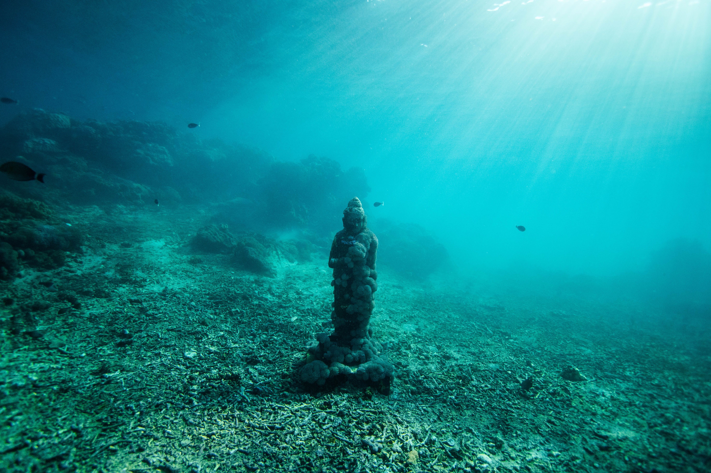 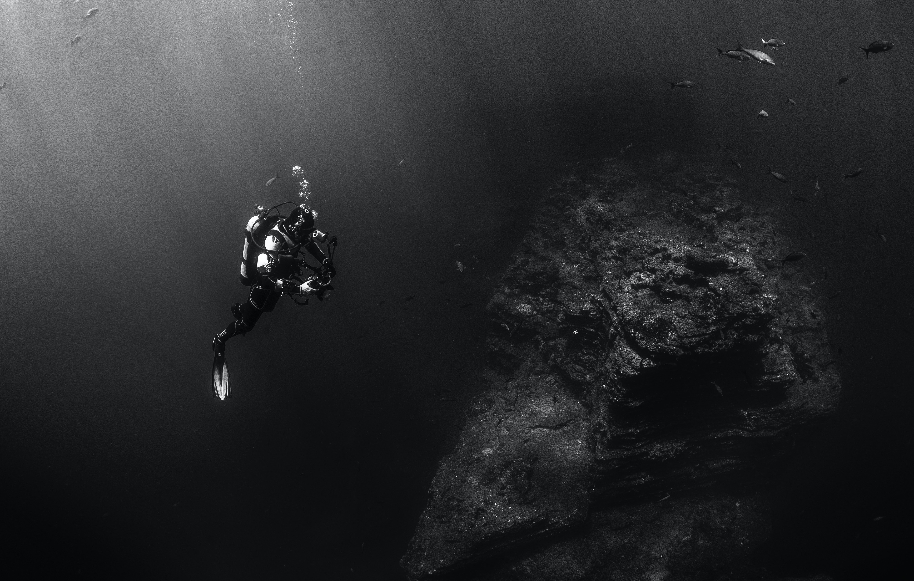
 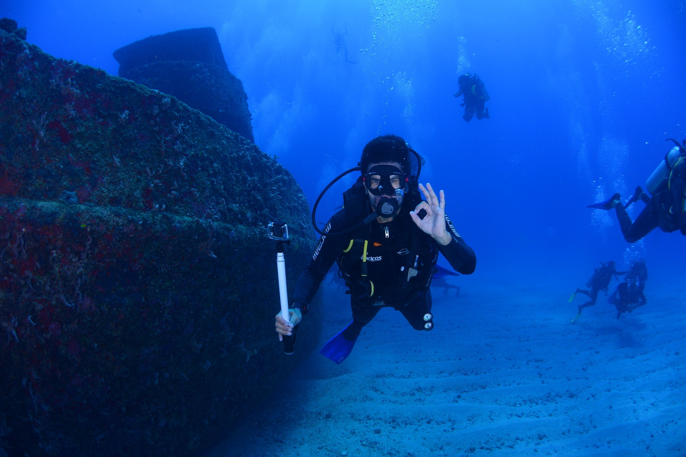
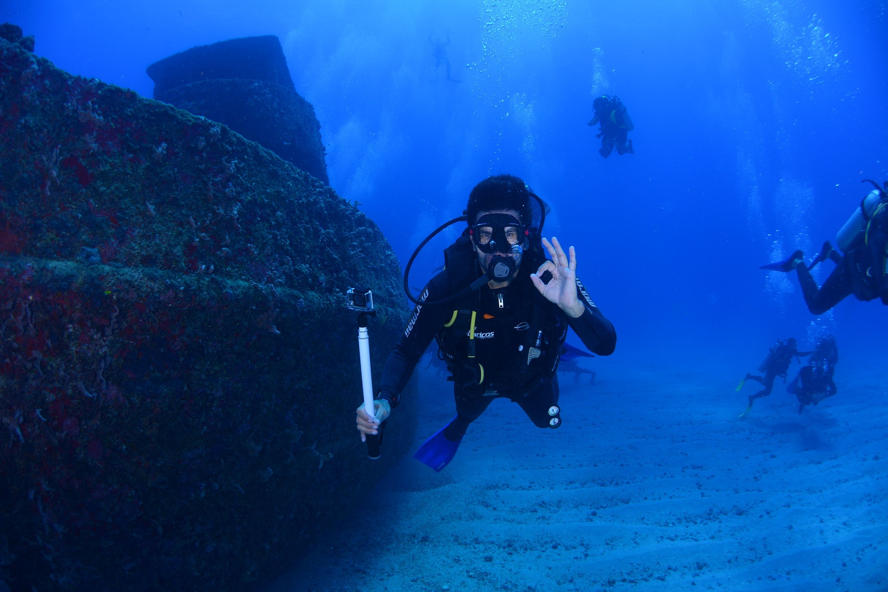


 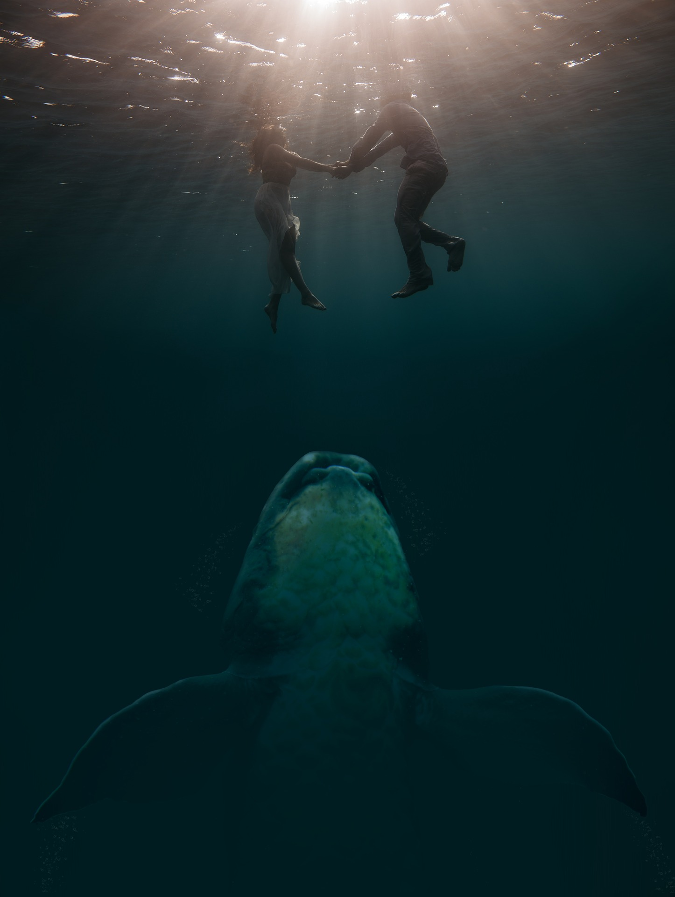
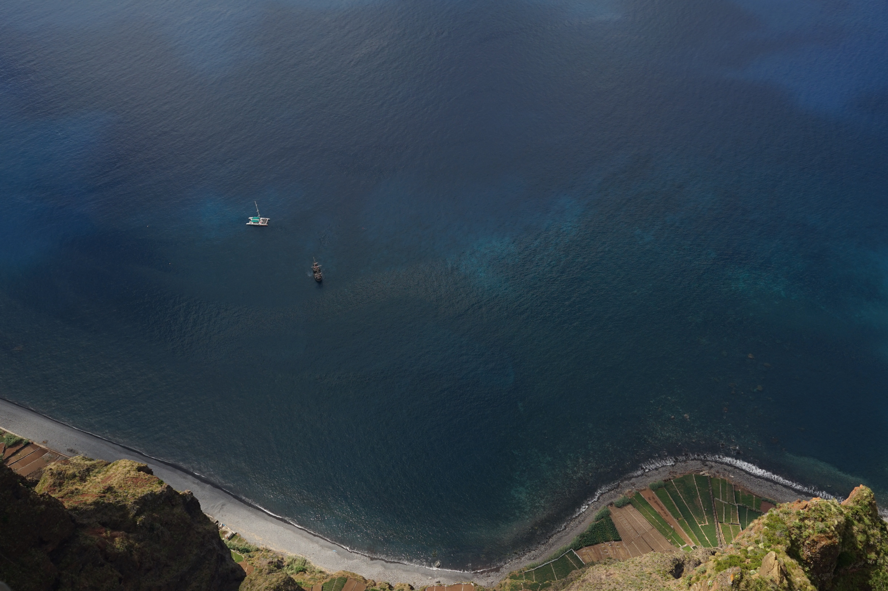
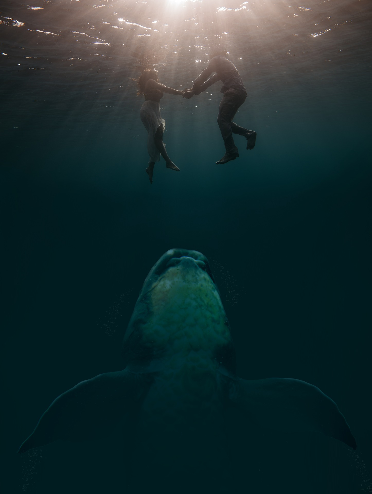
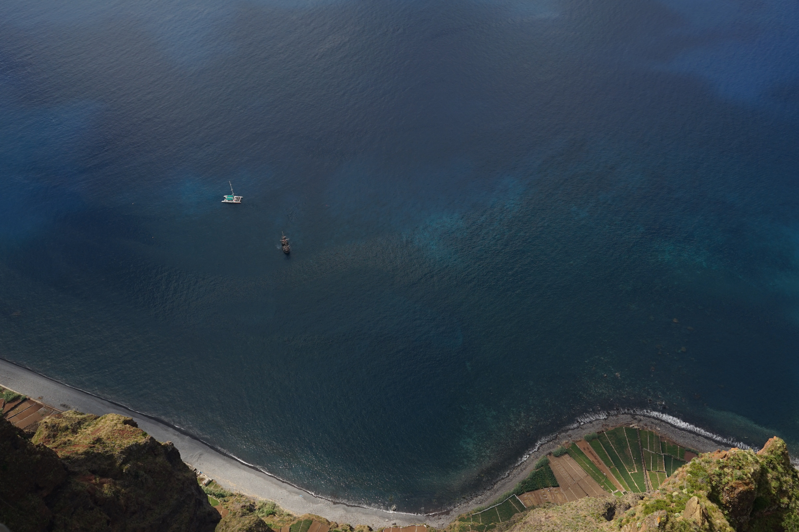

Thalassophobia adalah jenis fobia spesifik yang melibatkan rasa takut yang terus-menerus dan intens terhadap perairan luas dan dalam seperti lautan dan samudera. Apa yang membuat fobia ini berbeda dari aquaphobia, atau ketakutan akan air?
Jika aquaphobia melibatkan rasa takut akan air itu sendiri, thalassophobia berpusat pada badan air yang tampak luas, gelap, dalam, dan berbahaya. Pengidap thalassophobia tak sekadar takut pada air yang luas dan dalam, tetapi juga pada apa yang bersembunyi di bawah permukaannya.
Istilah thalassophobia berasal dari bahasa Yunani “thalassa” yang berarti laut, dan “phobos” yang berarti ketakutan. Menurut National Institute of Mental Health (NIMH), fobia adalah jenis penyakit mental yang paling umum di Amerika Serikat. Sementara fobia spesifik cukup umum di antara populasi umum, tidak diketahui berapa banyak orang yang mengidap thalassophobia.
Thalassophobia umumnya dianggap sebagai jenis fobia lingkungan alamiah tertentu. Ketakutan terhadap lingkungan alam cenderung menjadi salah satu jenis fobia yang lebih sering dialami, dengan beberapa penelitian menunjukkan bahwa fobia terkait air cenderung lebih umum di antara wanita.
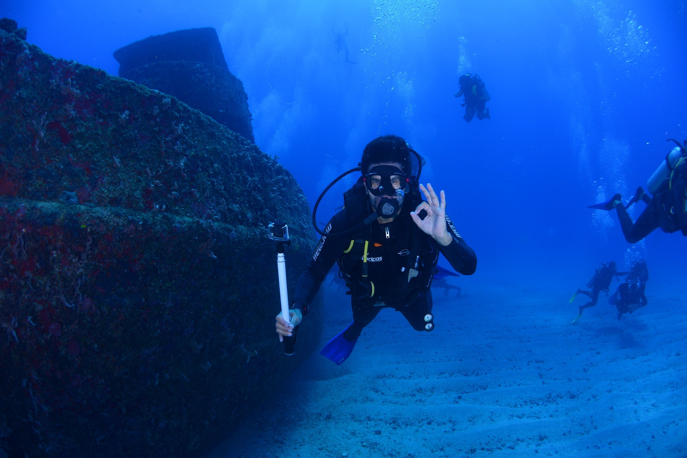
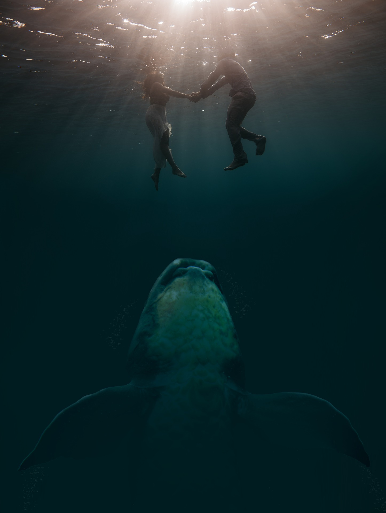
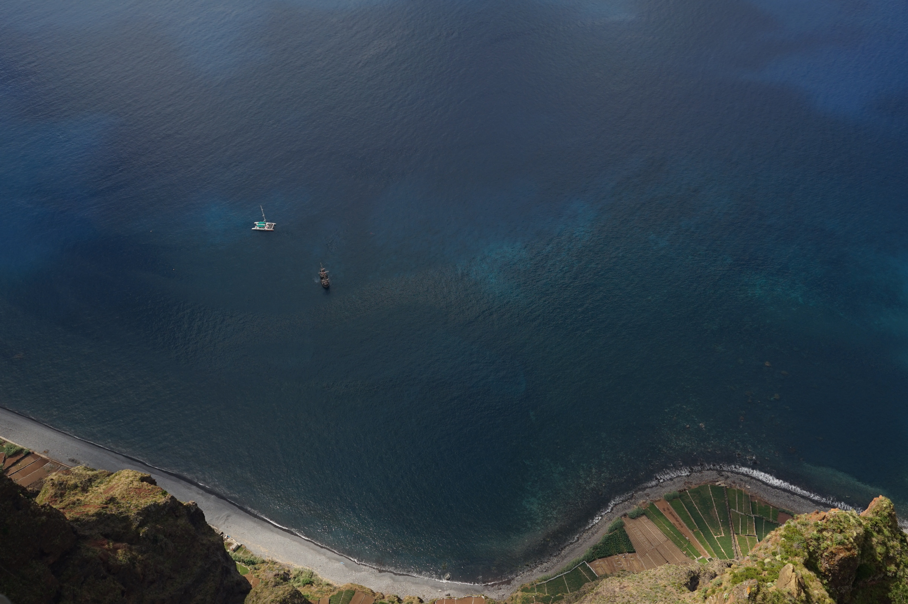
12200897
12200879
12200947
12200964